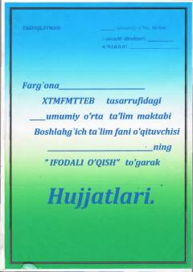

IOBoshlang'ich sinflar uchun "Ifodali o'qish" to'garagi dars ishlanmalari.
Ushbu qo'llanma boshlang'ich sinf o'quvchilari uchun mo'ljallangan "Ifodali o'qish" to'garagining ish rejasi va dars ishlanmalarini o'z ichiga oladi. Matnlar vatanni sevish, ona yurt va atoqli shaxslar haqidagi ma'rifiy mavzularni qamrab olgan.